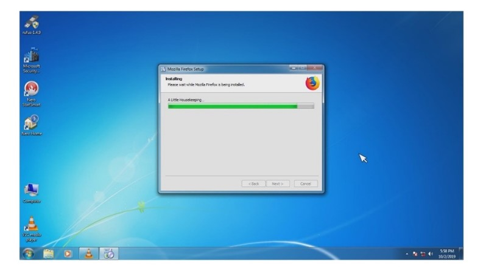

INTRODUCTION
When you open a computer, usually this will either be a Windows PC or a Macintosh computer. They will have different user interfaces or applications that may be specific to that computer. The Windows or the Mac are called operating systems
The Operating System (OS) is a layer of software which is used to manage computer resources. It also provides an interface, so that users can utilize computer resources. It configures and manages hardware to connect the components and the applications.
The three most popular operating systems are Windows, MAC, and Linux.
It is usually stored on a Flash memory chip on the motherboard, but sometimes the chip is another type of ROM.
-
-
-
Windows is the dominant over the other two. 90% of computer users use Windows operating system.
Windows and MAC are expensive operating systems however, MAC OS requires the users to buy the MAC systems (Macbook, Mac) built by Apple.
On the other hand, Linux is a free operating system.
Windows and MAC have similar file structures while Linux has a different code base (single file tree compared to Windows and MAC's many directories)
Windows interface has a Start menu, Taskbar, System Tray, and the Windows Explore while Linux has easy to switch interfaces.
Linux is most preferred by programmers, MAC is preferred by graphic artists, and Windows is preferred by gamers.
Go through the step-by-step procedure on how to install a Windows operating system below:
Common Operating Systems
The following are common operating systems being used today:
This is an essential step that you need to be aware of after installing an operating system. Basically, the device drivers tell your operating system how to use the components like the motherboard, graphics card, network interface cards, sound cards, and other devices.
Most of the time, Windows would be able to recognize a device and will install drivers automatically. Some cases would require installing generic drivers.
Drivers – small software programs that help the operating system use the device. When a device is malfunctioning, one should ask whether the right driver has been installed.
There are several ways to install device drivers for your newly installed components:
-
Manufacturer’s DVD Installer – Provided upon buying a computer, laptop, device
-
Driverpack Solution – A free tool which automatically finds proper drivers for a computer, then downloads and installs it without wizards or installation prompts.
-
Device Manager (Driver Update) – Can be accessed by clicking Start > Computer > Manage > Device Manager. From here, each component can have the option to install a driver through a CD or through searching automatically online.
-
Download Online – Look for unit’s Model Name and Number
Download Online – Look for unit’s Model Name and Number
Checking Device Driver Installation
After installation, you would want to see if you've installed the correct device drivers to avoid any issues that may hinder the component from running in its full performance.
In this simple procedure, we are looking if there drivers are already installed. If the device driver is installed, updating it through the device manager would prompt to say that the drivers are installed.
-
Open the Control Panel.
-
Select System and Security.
-
Click System and select Device Manager from the left side.
-
Click “Monitor” and you will see that a genetic monitor is installed.
System Software
Also known as Operating System. It tells the CPU what to do.
Most common examples include Windows, MAC OS, MS-DOS and Linux.
Application Software
It accomplishes specific tasks intended for personal, business, or scientific purposes. Example tasks include inventory management, payroll processing, human resource management, etc.
Common Application Software:
- Word Processor
- Spreadsheets
- Database Programs
- Presentation Software
- Desktop Publishing Software
- Reference Software
- Graphics Programs
- Educational Software
- Computer Games
- Network Software
- Language Software
Programming Software
Used to make computer programs. Programming language is used to create computer programs.
- Eclipse
- Coda
- Notepad ++
- Sublime Text
File System – A program used by the operating system to organize data or application files. The type of file system is used to determine how data and programs will be accessed. In addition to that, it can also control what data or programs will be available to users.
Types of File System
-
FAT File System
File Allocation Table Type allows the operating system to look for files on a disk.
-
FAT32 File System
More advanced version of the FAT File System. It can partition size as well as access speed. Because of this, FAT32 allows users to have better disk space utilization.
-
ExFAT
Stands for Extended File Allocation Table. A file system type that can be used for memory sticks and SD cards.
-
NTFS File System
New Technology File System. Compared to FAT and FAT32, NTFS has a much bigger partition and file size. It is a highly reliable file system type because it is recoverable. It also has fault tolerance which means that logged transactions can be used to recover data.
Follow the guidelines to format the file system in a storage.
-
By default, formatting is set to FAT.
-
– If you try to format an internal hard disk that is smaller than 32 GB, you will see the options for NTFS, FAT and FAT32.
-
– If you try to format an internal hard disk that is larger than 32 GB, you will only see the option for NTFS.
-
– If you try to format an external USB device smaller than 32 GB, you will see all the options.
-
– If you try to format and external USB device larger than 32 GB, you will only see NTFS and exFAT.
-
Devices smaller than 32 GB should be formatted in FAT or FAT32 for more reliability and less disk space wastage.
-
Files larger than 32GB should be formatted in exFAT for latest operating systems.
-
For other compatible devices and other operating systems, files larger than 32 GB should be formatted using NFTS.
The following are the most common file formats that you will encounter when working in a computer.
| File type |
File Extension |
| Text |
.doc .docx .asc .rtf .msg .txt .wpd .wps |
| Image |
.jpg .gif .png .bmp .eps .pict .psd .tif |
| Sound |
.mp3.aac .au .mid .ra .snd .wma .wav |
| Video |
.mp4.avi .mpg .mov .wmv |
| Program |
.exe .bat .com |
| Compressed |
.arj .gz .hqx .rar .sit .tar .z .zip .arc |
This is the basic procedure that is most common when you are installing applications.
- Eclipse
- Coda
- Notepad ++
- Sublime Text
